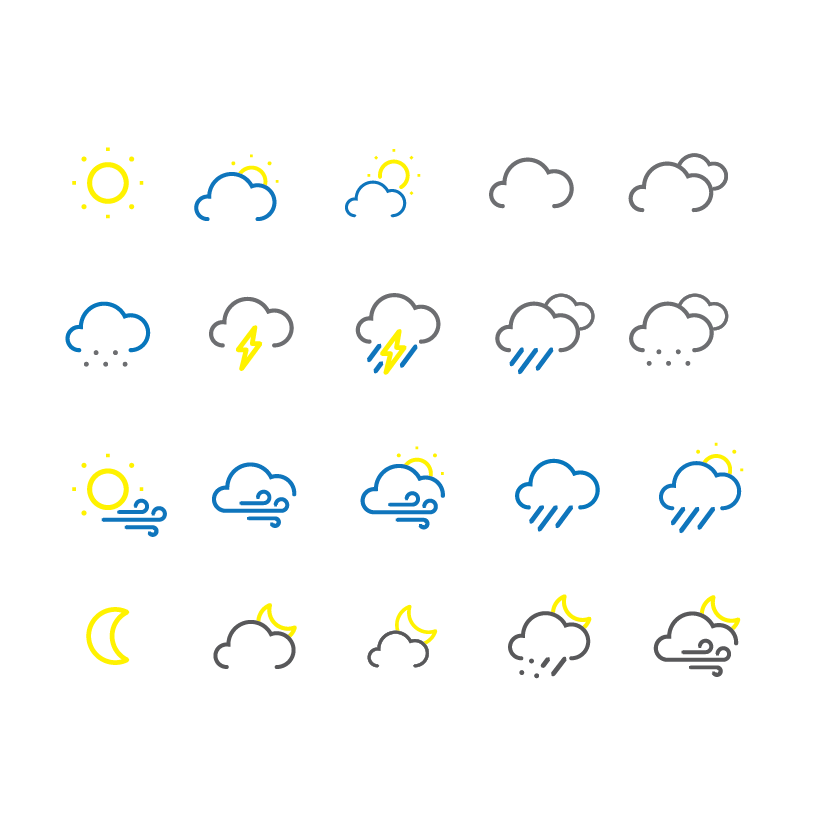
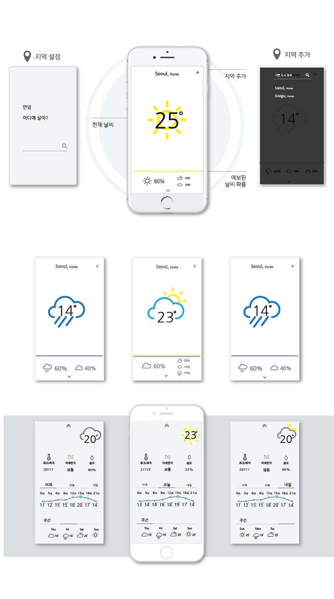
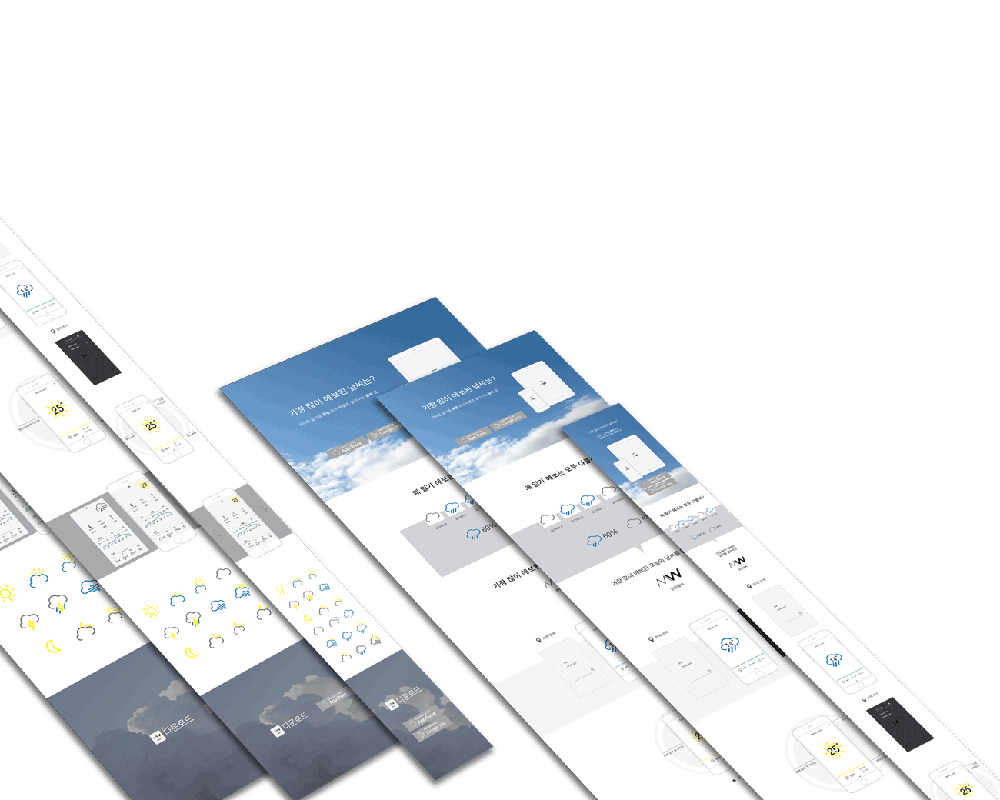

ROLE
Planning
Design
Publishing
기상예측회사는 기상청 외에도 케이웨더, 웨더아이 등
다양한 민간업체가 존재.
오보하는 경우가 더 많은 일기예보
다양한 기상예측 정보를 모아
일기예보가 맞을 확률을 높일 수 있도록
정보를 비교하여 %로 알려준다.
기상 정보를 몽땅 모아 확률로 알려주는 앱
모든 일기예보의 정보를 모아서 비교해주는 앱의
성격을 직관적으로 나타내는 네이밍인 몽땅날씨
(MongDDang Weather)의 MW을 확률의 %를 더하여 디자인
ㅇㅇㅇㅇㅇ
ddd


